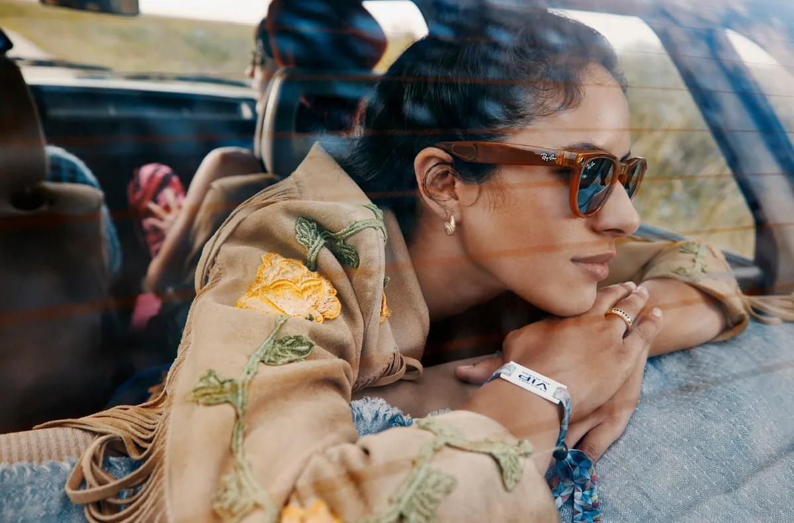
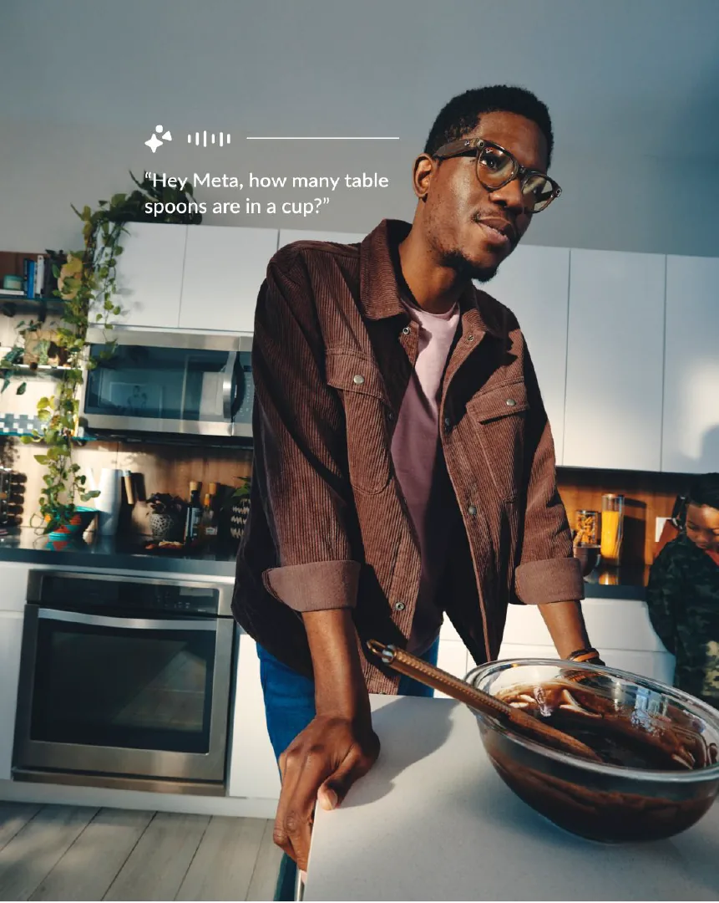
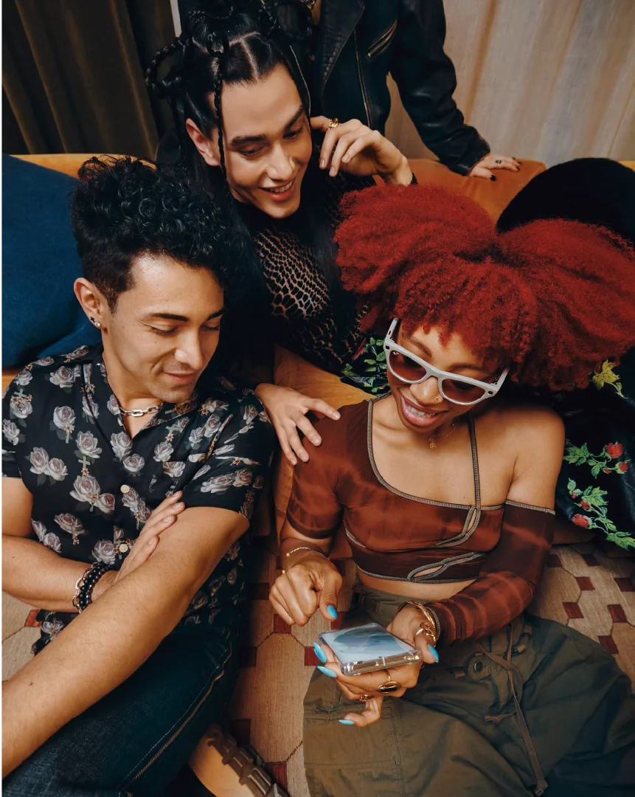
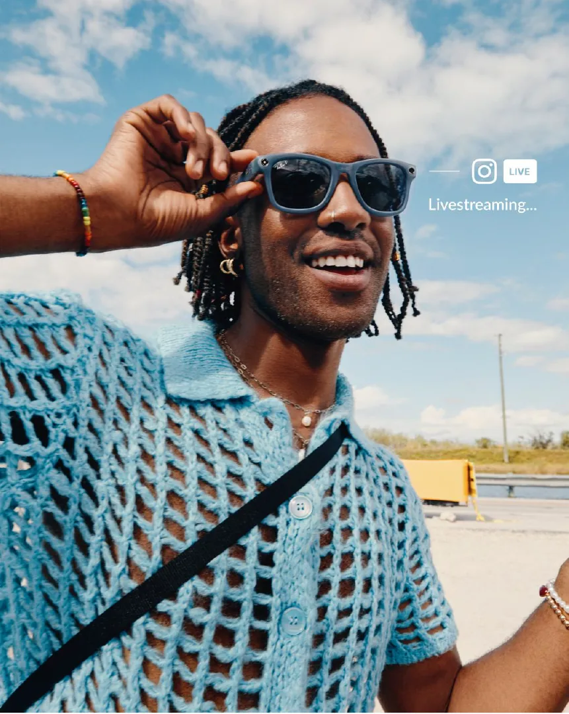
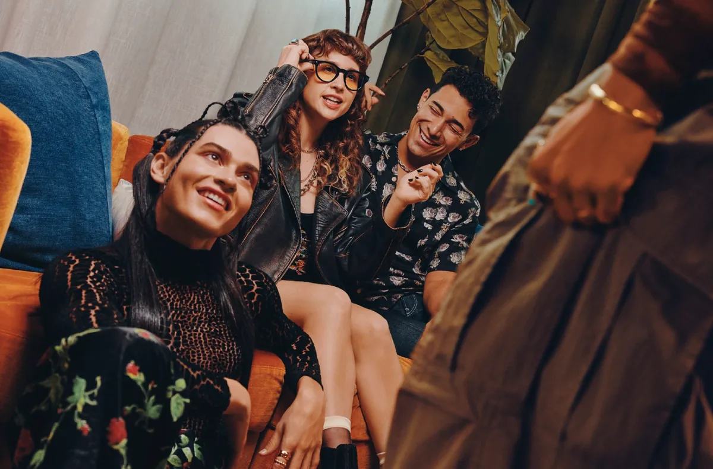

Meta + Ray-Ban
PROBLEM: Smart glasses had advanced features, but the marketing didn't show it. The product felt technical, not desirable.
SOLUTION: Built a lifestyle-driven content system that made the technology feel natural, wearable, and culturally relevant.
ROLE: Design Program Manager

How We Did It
Turned a complex, technical product into shippable creative
Partnered with executive and technical stakeholders to align on what the product actually needed to communicate. Translated highly specific features into clear creative direction the team could execute against.
Drove alignment across leadership and working teams
Coordinated between executive stakeholders and senior creatives to keep priorities clear and decisions moving. Ensured the right people were in the room at the right time so work didn't stall or drift.
Built structure around a fast-moving, ambiguous process
Established timelines, feedback loops, and handoffs across internal teams and external partners. Reduced friction, resolved blockers early, and kept production on track without losing momentum.



Impact
Aligned stakeholders across Meta and Ray-Ban to support a unified creative direction
Enabled scalable content production by establishing clear workflows and handoffs
Helped translate complex product features into lifestyle-driven storytelling

PARTNERS (in-house): Daniel Ilic (Executive Creative Director), Ryan Wesley Peterson (Creative Director), Megan Trinidad (Creative Director), Cassie Pauley (Junior Designer), Gabby Gardner (Producer), & Taryn Nagla (Producer)
PARTNERS (agency): Special Guest, Whitehouse, & Assembly